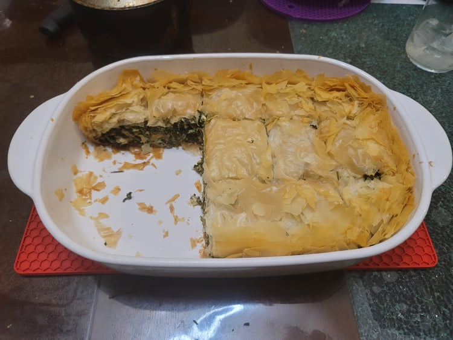

Spanakopita

Ingredients:
Filling:
- 1 lb Frozen chopped spinach
- 2 bunches Parsley, leaves only, finely chopped
- 2 tbsp Dill, finely chopped
- 2 cloves Garlic, minced
- 2 tbsp Olive oil
- 4 Eggs
- 10.5 oz Feta cheese, crumbled
- Salt, to taste
- Black pepper, to taste
Spanakopita:
- 1 lb Phyllo dough sheets
- Olive oil, as needed
Instructions:
- Preheat an oven to 325 degrees Fahrenheit.
- Squeeze any excess liquid from the spinach using your hands. Then combine all the filling ingredients into a large bowl.
- Brush the inside of a 9.5x13 inch baking dish with olive oil. Line the baking dish with two phyllo sheets, letting them cover the walls of the baking sheet. Then add another coating of olive oil, followed by another two phyllo sheets. Repeat this until you have used 2/3 of the phyllo sheets.
- Evenly spread the spinach filling into the baking dish. Cover with two more phyllo sheets and repeat the pattern again until all the phyllo sheets are used up.
- Fold the excess flaps in and coat the final layer with more olive oil. Sprinkle the top very lightly with a few drops of water. Place into the oven and let bake for about an hour or until the phyllo is a nice golden shade. Cut into squares and serve.